FoodLuck MEO 操作説明書 17
SNS連携機能
X、Facebook、Instagram、LINEをFoodLuck MEOと連携し、投稿・分析・配信を安全に運用するための実務マニュアル
| この資料の目的 SNS連携機能は、FoodLuck MEOと各SNS・LINE公式アカウントをつなぎ、投稿の同時配信、SNS投稿のGoogle反映、Instagram分析、LINE配信を行う機能です。外部アカウントの権限や公開投稿に関わるため、店舗側で触る操作とFoodLuck側へ確認する操作を分けて理解してください。 |
|---|
| 操作前の注意 連携、投稿、削除、LINE配信は外部媒体やお客様に影響します。アカウント権限、対象店舗、投稿内容、配信先、予約日時を確認してから操作してください。ログイン情報、APIキー、アクセストークンなどは社外へ不用意に共有しないでください。 |
|---|
1. SNS連携でできること
SNS連携では、Googleビジネスプロフィール、Instagram、Facebook、X、LINE公式をまとめて運用できます。ただし媒体ごとに反映タイミングや制限が違います。まずは何をしたいかを決めてから設定します。
| 機能 | できること | 向いている運用 | 注意点 |
|---|---|---|---|
| DashboardからSNS/GBP投稿 | FoodLuck MEOで作った投稿をGBPとSNSへ出す | 新商品、イベント、特典をまとめて告知 | GBPにも必ず反映、画像は基本1枚 |
| SNSからGBPへ反映 | SNS投稿をGBPの最新情報へ反映 | Instagram中心で運用している店 | URL設定不可、先頭画像のみ反映 |
| 特定キーワード | 指定ハッシュタグがある投稿だけGBPへ反映 | 複数店舗で投稿を出し分ける | #なしで登録、本文だけでは反映されない |
| Instagram分析 | 投稿、リール、ストーリーズ、競合、ハッシュタグを分析 | 投稿改善、反応確認 | 分析連携対象の設定が必要 |
| LINE公式 | メッセージ配信、あいさつ、応答、リッチビデオ | 常連化、再来店促進 | 配信先・日時の確認が重要 |
FAQ画像: SNS連携の運用フロー
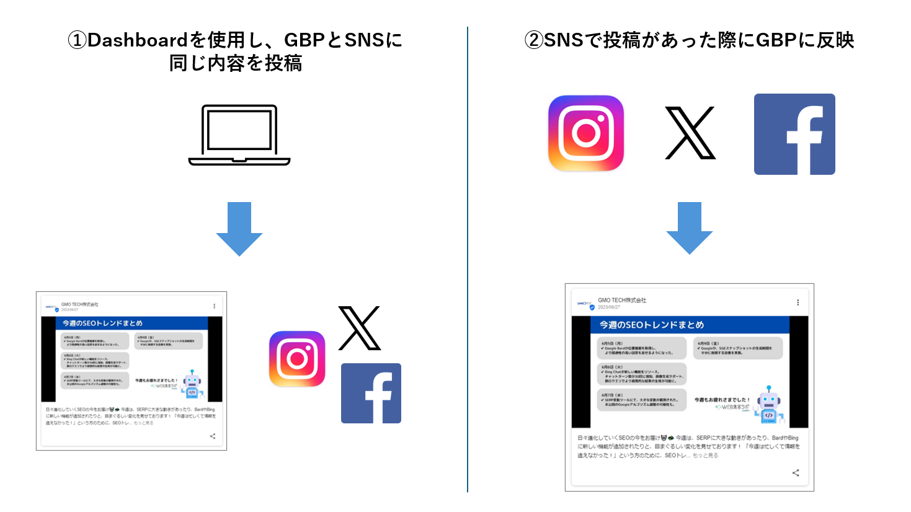
・運用は「Dashboardから投稿する」か「SNS投稿をGBPへ反映する」かで変わります。
・Instagramは、運用方式により単体連携とFacebook経由連携を使い分けます。
2. 連携前に決めること
連携前に、どの媒体を主に運用するか、GBPへ自動反映したい投稿をどう選ぶかを決めます。飲食店では、店舗限定情報と全店共通情報が混ざりやすいため、特定キーワードの設計が大切です。
2-1. 2つの運用パターン
| 運用パターン | メリット | 注意点 |
|---|---|---|
| DashboardからGBPとSNSへ投稿 | GBP投稿とSNS投稿を同時に作成できる。GBP投稿にURLを付けられる。 | 画像は1枚。GBPにも必ず投稿される。 |
| SNS投稿をGBPへ反映 | SNS運用のついでにGBP更新頻度を維持できる。 | URLは設定不可。複数画像は先頭1枚のみ。 |
2-2. 特定キーワードの使い方
1. ビルアイコンから「設定」>「店舗」を開き、対象店舗を選ぶ。
2. 各SNSの連携項目にある「特定のキーワード」にキーワードを入力する。
3. 設定時は「#」を付けず、キーワードだけを入力する。
4. 「特定キーワードを使う」にチェックを入れる。
5. 複数キーワードは半角カンマ区切りで登録する。
| 反映条件 SNS投稿に「#ランチ」のようなハッシュタグが入っている時だけ反映されます。本文にランチと書いただけでは反映されません。複数キーワードはOR条件です。 |
|---|
FAQ画像: 特定キーワード設定
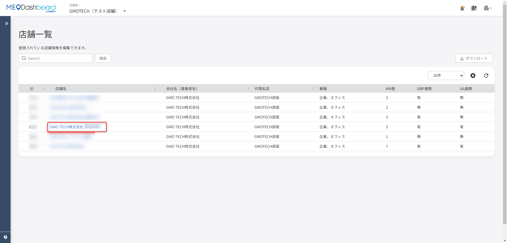
・店舗ごとにGBPへ反映する投稿を絞り込めます。
・全店共通ハッシュタグと店舗限定ハッシュタグを分けると、投稿の出し分けがしやすくなります。
3. SNS投稿時の注意点
SNSからGBPへ自動反映する場合、反映タイミングと媒体ごとの制限を理解しておく必要があります。「投稿したのにGoogleに出ない」と感じる時の多くは、バッチ処理待ち、文字数、画像枚数、投稿種別が原因です。
| 項目 | FAQでの案内 | 現場での見方 |
|---|---|---|
| 反映タイミング | Instagram 1:00/6:00/11:00/16:00/21:00、Facebook 10:00/14:00/19:00、Xは3時間ごと | すぐ反映されないことがある |
| 初回連携当日 | 連携日の前日0:00以降の投稿が反映対象 | 古い投稿まで全て反映されるわけではない |
| 画像 | 複数画像は1番目のみGBPに反映 | 料理写真は1枚目を必ず見せたい画像にする |
| Instagram投稿種別 | ストーリー、リール等はGBP反映されない | 通常投稿中心で運用する |
| 文字数 | GBP最新情報は1,500字まで | 長文SNS投稿は反映できない場合がある |
3-1. Dashboardから投稿する場合
・投稿種類は「最新情報」「イベント」「特典」を使い分けます。
・イベントは開催期間がある催事、特典はクーポンや割引、最新情報は通常のお知らせに向いています。
・SNSとGBPへ同時投稿する場合は、日付、価格、リンク先、画像、電話番号の扱いを確認します。
FAQ画像: Dashboardから最新情報を投稿する
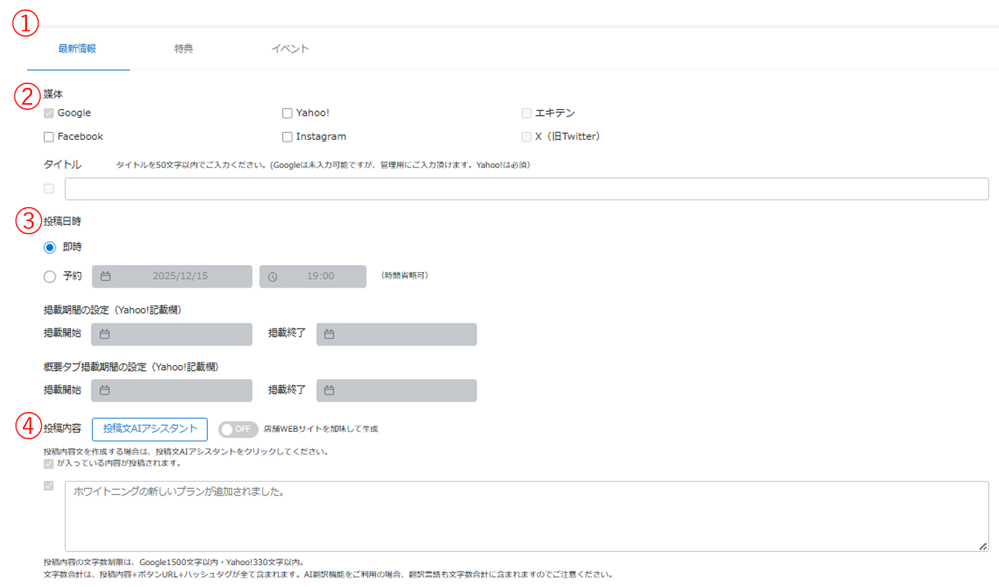
・最新情報は、通常のお知らせや新メニュー告知に使います。
・公開前に、投稿先媒体と内容を確認します。
3-2. 電話番号・削除・ポリシー違反
・電話番号投稿の除外設定を使うと、SNS投稿時に電話番号を除外できます。
・除外設定OFFの場合の挙動は、投稿内容に電話番号が含まれる可能性があるため事前確認が必要です。
・Dashboardで投稿を削除しても、Google、Yahoo!、Facebook、Instagram、Xなど媒体ごとに反映のされ方が異なります。
・ポリシー違反投稿一覧では、媒体側のルールで反映できなかった投稿を確認します。
・画像サイズは媒体ごとの仕様に影響します。投稿前に画像が極端に小さい、縦長すぎる、横長すぎる場合は調整します。
FAQ画像: ポリシー違反投稿一覧
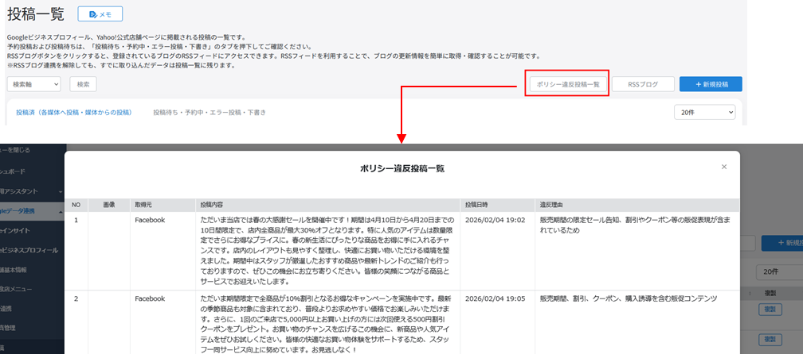
・投稿が反映されない時は、エラーやポリシー違反の一覧を確認します。
・原因が分からない場合はFoodLuck側へ確認します。
4. Facebook・Instagram連携
Instagram連携は、運用方式によって「Instagram単体連携」と「Facebook経由連携」を使い分けます。飲食店現場では、アカウント権限やFacebookページの有無でつまずきやすいため、事前準備を確認します。
| 連携方法 | 向いている運用 | 注意点 |
|---|---|---|
| Instagram単体連携 | Instagram投稿をGBPへ反映したい | 連携できるアカウントは1つ。既存連携が切れる場合あり。 |
| Instagram Facebook経由 | DashboardからInstagramにも投稿したい | InstagramプロアカウントとFacebookページの連携が必要。 |
| Facebook連携 | Facebookページへ投稿したい | ページ権限、オプトイン、連携対象チェックを確認。 |
4-1. Instagram単体連携
1. 「設定」>「店舗」から連携する店舗を開く。
2. Instagram連携の「Instagramアカウント連携（単体）」を押す。
3. 警告を確認し、新規連携で問題なければ確認する。
4. Instagramへログインし、許可する。
5. Dashboardへ戻り、連携アカウントとステータスがアクティブか確認する。
6. 「連携対象」にチェックを入れる。
FAQ画像: Instagram単体連携の入口
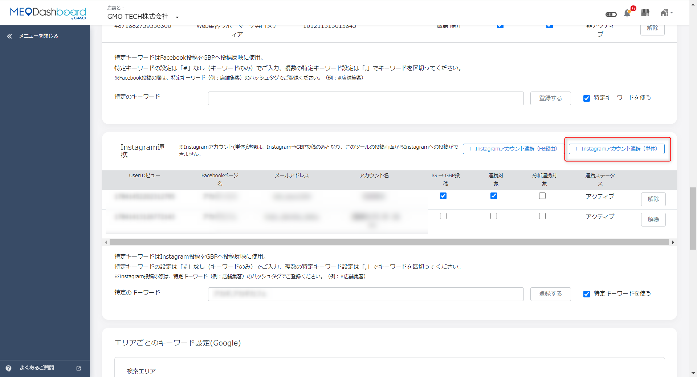
・Instagram単体連携は、SNS投稿をGBPへ反映する運用向けです。
・連携対象にチェックがないと投稿取得されません。
4-2. Facebook経由・Facebookページ連携
・InstagramをFacebook経由で連携する場合、InstagramプロアカウントとFacebookビジネスページのリンクが必要です。
・Facebookページは、PCのFacebook、スマホのFacebook、Instagramのプロフィール編集から作成できます。
・FacebookページとInstagramを連携する方法は、PC、Facebookアプリ、Instagramアプリの3通りがあります。
・Facebook連携では、Facebookログイン、ページのオプトイン、保存、連携対象チェックを確認します。
・InstagramのユーザーネームやURLを変更した場合は、連携状況に影響する可能性があるためFoodLuck側へ確認します。
FAQ画像: Instagram Facebook経由連携
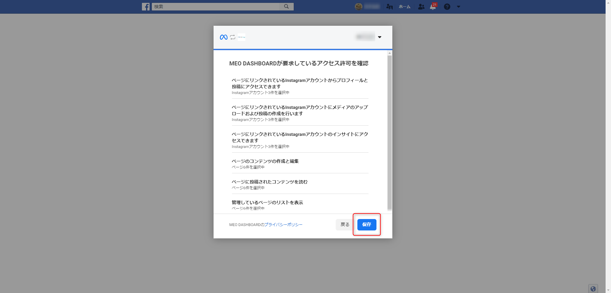
・Facebook経由連携では、対象ページやInstagramアカウントの許可範囲を確認します。
・複数店舗で使う場合は、どの店舗にどのページを紐づけるかを整理します。
FAQ画像: Facebook連携の連携対象
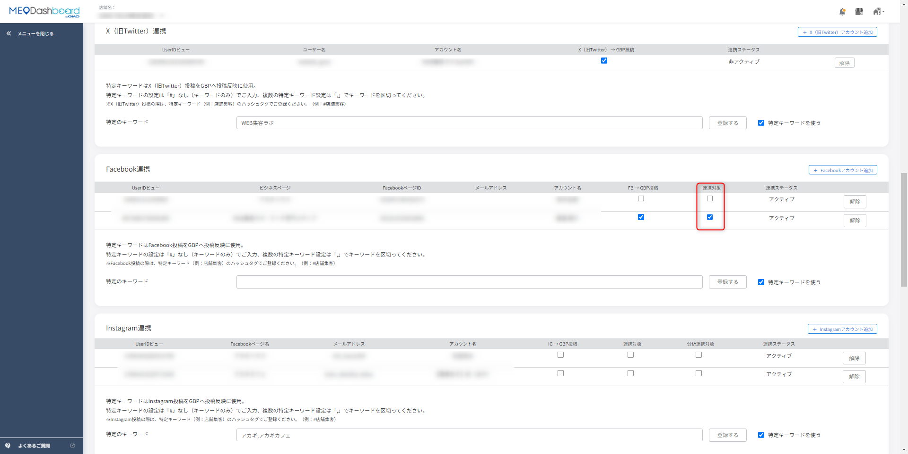
・最後に連携対象へチェックを入れて完了します。
・チェック漏れがあると投稿対象にならないため、連携後に必ず確認します。
4-3. IGからGBPへの投稿・写真管理
・IG→GBP投稿では、Instagram投稿をGBPの投稿へ反映できます。
・IG→GBP写真管理では、Instagram投稿画像をGBP写真として扱う機能があります。
・ハッシュタグなし投稿の扱いは設定内容により変わります。自動反映したくない投稿がある場合は特定キーワードを使います。
・Instagram投稿がGoogleへ反映されない時は、連携対象、投稿種別、文字数、画像、バッチ処理時間、特定キーワードを確認します。
5. X（旧Twitter）連携
X連携は、アカウント連携だけでなくTwitter Developer Portal側の設定やBasicプラン契約が関わる場合があります。飲食店側だけで完結しにくい部分があるため、FoodLuck側と確認しながら進めます。
1. FoodLuck MEOの対象店舗を開き、X連携の設定箇所を確認する。
2. 必要に応じてXアカウント連携を開始する。
3. Developer Portalでアプリ・キー・権限などを設定する。
4. Basicプラン契約が必要な場合は、費用や契約主体を確認する。
5. 連携後、投稿テストと反映状況を確認する。
| X連携ができない時 FAQでは、X側のAPI利用条件やDeveloper Portal設定が関係する案内があります。店舗側で分からない場合は、無理に変更せずFoodLuck側へ確認してください。 |
|---|
FAQ画像: X Developer Portalの操作
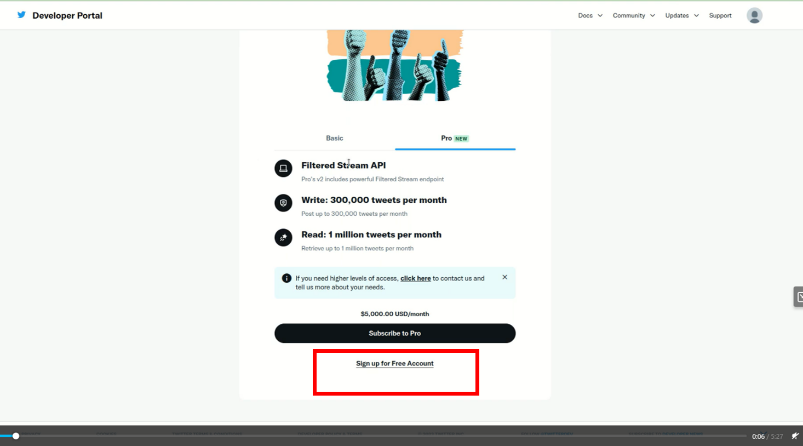
・X連携は外部開発者画面の操作が必要になる場合があります。
・APIキーやトークンに関わるため、権限情報の扱いに注意します。
FAQ画像: FoodLuck MEOからX投稿連携
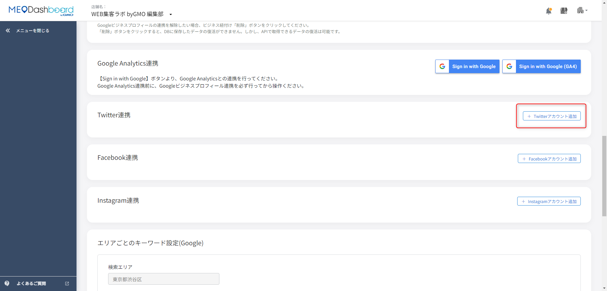
・Dashboard側でX連携の投稿対象を確認します。
・特定キーワードや投稿先を間違えないようにします。
・Xでも特定キーワード（ハッシュタグ）によりGBP反映を制御できます。
・キーワードは設定後すぐではなく、反映に時間がかかる場合があります。
・連携できない場合は、ログインアカウント、Developer Portal設定、Basicプラン、権限を確認します。
6. Instagram分析機能
Instagram分析機能では、Instagramの投稿成果や競合、ファンユーザー、コメント、投稿カレンダー、ハッシュタグを確認できます。投稿を出すだけで終わらせず、どの投稿が来店や認知につながりやすいかを見るための機能です。
| 画面 | 見られること | 飲食店での使い方 |
|---|---|---|
| Instagramダッシュボード | アカウント全体の推移 | 月次でフォロワーや反応を確認 |
| インサイト情報 | 投稿、リール、ストーリーズの反応 | 保存・リーチが高い投稿を把握 |
| 投稿詳細 | コメント、いいね、リーチ、保存、シェア等 | 次の投稿テーマを決める |
| 競合分析 | 競合アカウントの投稿や反応 | 近隣店の投稿頻度・反応を比較 |
| ファンユーザーリスト | 反応の多いユーザー | 常連化や来店導線のヒントにする |
| コメント分析 | コメント傾向 | お客様の反応を拾う |
| 投稿カレンダー | 投稿日時や投稿内容 | 投稿頻度の偏りを確認 |
| ハッシュタグ分析 | ハッシュタグ別の投稿数、いいね、コメント等 | 集客に効くタグを見つける |
FAQ画像: Instagram分析の連携対象
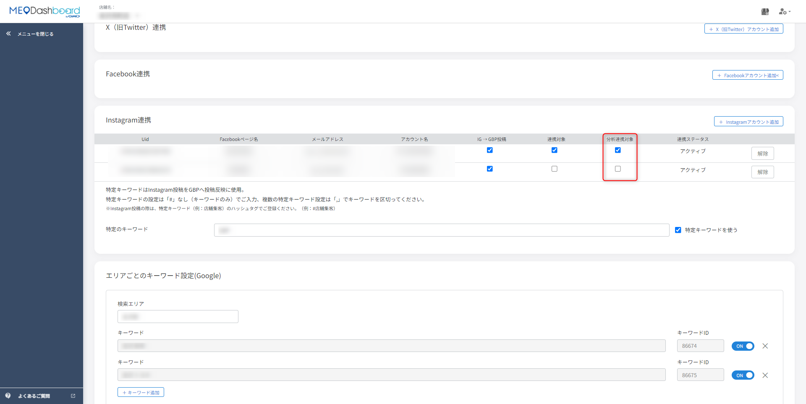
・分析機能を使うには、対象アカウント側の連携状態を確認します。
・表示されない場合は、分析連携対象のチェックや権限を確認します。
FAQ画像: Instagramインサイト情報
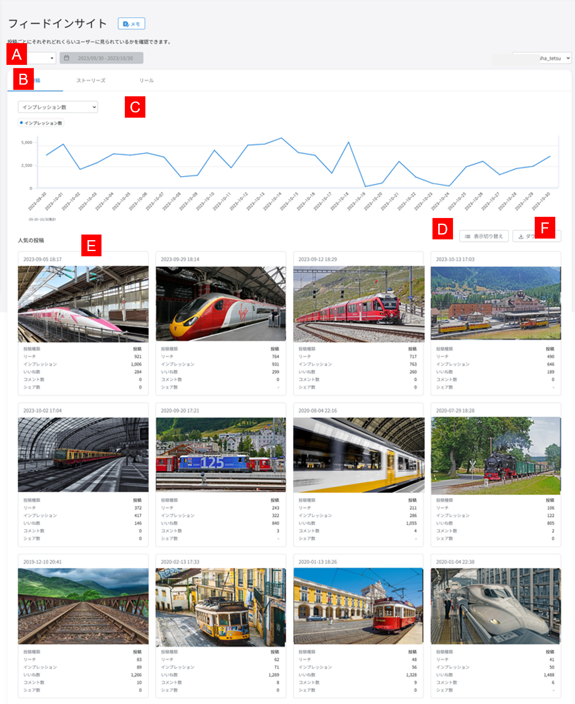
・投稿、リール、ストーリーズごとに反応を見ます。
・リーチは見た人数、インプレッションは表示回数です。
| 見るべき数字 飲食店では、いいね数だけでなく、保存数、リーチ、コメント、シェア、投稿後の来店導線を合わせて見ます。保存される投稿は、メニュー、価格、営業時間、アクセスなど来店前に見返したい内容であることが多いです。 |
|---|
7. LINE連携
LINE連携は、LINE公式アカウントとFoodLuck MEOを接続し、メッセージ配信や自動応答を行う機能です。お客様へ直接届くため、投稿以上に配信内容・対象・日時の確認が大切です。
7-1. 事前準備と必要情報
・LINE公式アカウントを開設します。
・LINE Developersで開発者アカウント、プロバイダー、チャネルを作成します。
・チャネルID、チャネルシークレット、あなたのユーザーID、チャネルアクセストークンを確認します。
・Webhook URLに https://app.meo-dash.com/get_event_webhook を設定します。
・セグメント配信等を使う場合はLIFF IDを作成し、FoodLuck MEOへ登録します。
FAQ画像: LINE連携に必要な情報
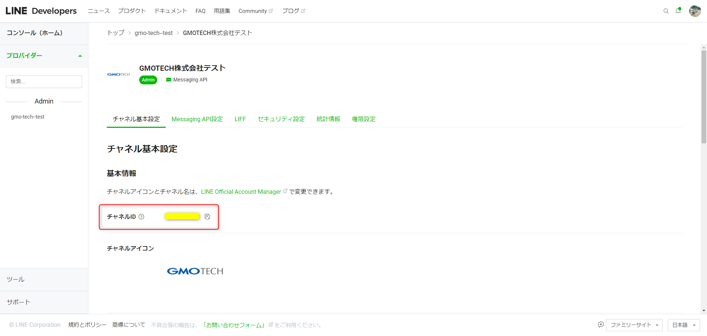
・LINE Developersで必要情報を確認します。
・トークンやシークレットは重要情報のため、扱いに注意します。
FAQ画像: FoodLuck MEOへLINE情報を入力
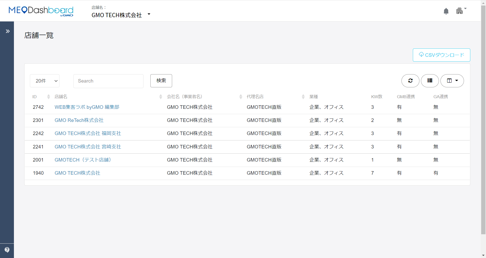
・店舗詳細画面でLINE連携情報を入力します。
・入力後に登録する前、各値が正しいか確認します。
7-2. LINE公式でできる配信
| 機能 | できること | 注意点 |
|---|---|---|
| メッセージ配信 | すべての友だち、属性、セグメントへ配信 | 即時・予約、配信先、内容を確認 |
| あいさつメッセージ | 友だち追加直後に自動送信 | 第一印象を決めるため丁寧に作る |
| 応答メッセージ | 受信メッセージに自動返信 | キーワード完全一致、時間帯、ON/OFFを確認 |
| リッチビデオメッセージ | 動画を自動再生し、アクションへ誘導 | 動画・ボタン・遷移先を確認 |
FAQ画像: LINEメッセージ配信
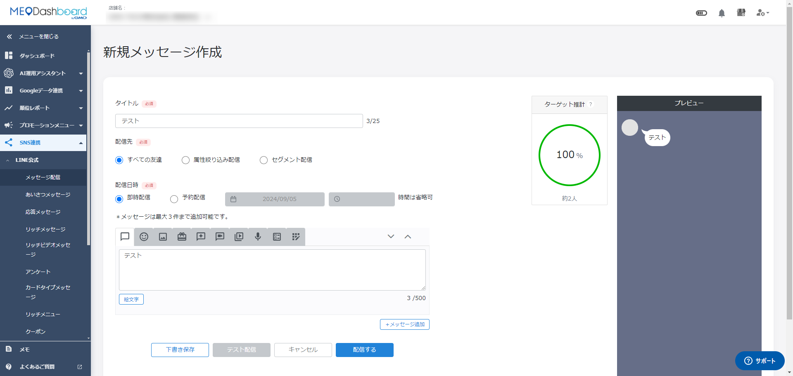
・タイトルは管理用、配信先はすべての友だち・属性・セグメントから選びます。
・右側プレビューで見え方を確認してから配信します。
| 配信前の確認 LINE配信はお客様へ直接届きます。誤配信を防ぐため、配信先、日時、クーポン条件、画像、リンク、誤字を必ず確認してください。 |
|---|
8. 反映されない・うまくいかない時
| 困ったこと | まず確認すること | 対応 |
|---|---|---|
| SNS投稿がGBPに出ない | バッチ処理時間、連携対象、特定キーワード、文字数、投稿種別 | 時間を置いて確認し、条件が合わなければ修正 |
| Instagram投稿がGoogleに出ない | 単体/FB経由の運用方式、通常投稿か、先頭画像、1500字以内か | リール・ストーリーは対象外として運用を見直す |
| X連携できない | Developer Portal、Basicプラン、権限、ログインアカウント | FoodLuck側へ確認 |
| 投稿削除が反映されない | 削除元媒体と反映先媒体 | 媒体ごとの仕様差を確認 |
| ポリシー違反になる | 画像、文言、URL、電話番号、媒体ルール | 投稿内容を修正して再投稿 |
| Instagram分析が見えない | 分析連携対象、権限、対象アカウント | 連携状態を確認 |
| LINE配信できない | チャネル情報、アクセストークン、Webhook、LIFF ID | 設定値を確認し、FoodLuckへ相談 |
9. SNS運用チェックリスト
□ Dashboard投稿とSNS投稿のどちらを中心にするか決めている
□ Instagramは単体連携かFacebook経由連携かを決めている
□ FacebookページとInstagramプロアカウントの連携状態を確認した
□ 連携対象にチェックが入っている
□ 特定キーワードは「#なし」で登録し、SNS投稿側はハッシュタグ付きで投稿している
□ 複数店舗で同じSNSを使う場合、全店共通タグと店舗限定タグを分けている
□ SNSからGBP反映時は先頭画像だけ反映される前提で投稿している
□ Instagramのストーリー・リールはGBP反映対象外であることを理解している
□ GBPへ反映する投稿は1,500字以内に収めている
□ LINE配信前に、配信先・日時・内容・リンク・クーポン条件を確認している
10. この資料に反映したFAQ記事
| No. | カテゴリ | FAQ記事 | 本文での反映先 |
|---|---|---|---|
| 1 | SNS連携前にご確認ください | SNS連携の運用フローに関して | 1-3. 連携前・注意点 |
| 2 | SNS連携前にご確認ください | SNS投稿注意点 | 1-3. 連携前・注意点 |
| 3 | SNS連携前にご確認ください | 特定キーワードについて | 1-3. 連携前・注意点 |
| 4 | Facebook・Instagram連携 | Instagramアカウント連携（単体）の方法 | 4. Facebook・Instagram連携 |
| 5 | Facebook・Instagram連携 | Instagramアカウント連携（Facebook経由）の方法 | 4. Facebook・Instagram連携 |
| 6 | Facebook・Instagram連携 | Facebookページの作成方法 | 4. Facebook・Instagram連携 |
| 7 | Facebook・Instagram連携 | FacebookページとInstagramの連携方法 | 4. Facebook・Instagram連携 |
| 8 | Facebook・Instagram連携 | SNS連携：Facebook連携の方法 | 4. Facebook・Instagram連携 |
| 9 | Facebook・Instagram連携 | IG→GBP投稿について | 4. Facebook・Instagram連携 |
| 10 | Facebook・Instagram連携 | IG→GBP写真管理について | 4. Facebook・Instagram連携 |
| 11 | Facebook・Instagram連携 | IG → GBPの「ハッシュタグなし投稿」について | 4. Facebook・Instagram連携 |
| 12 | Facebook・Instagram連携 | 連携後にInstagramのユーザーネーム・URLを変更された際のご対応について | 4. Facebook・Instagram連携 |
| 13 | Facebook・Instagram連携 | Instagramの投稿がGoogleに反映がされない場合 | 4. Facebook・Instagram連携 |
| 14 | X（旧Twitter）連携 | X連携ができない時の解決策 | 5. X連携 |
| 15 | X（旧Twitter）連携 | X（旧Twitter）連携：特定キーワード（ハッシュタグ）の設定と反映について | 5. X連携 |
| 16 | X（旧Twitter）連携 | X（旧Twitter）アカウント連携に関して | 5. X連携 |
| 17 | X（旧Twitter）連携 | X（旧Twitter）アカウント連携_Twitter Developer Portalの操作方法 | 5. X連携 |
| 18 | X（旧Twitter）連携 | X（旧Twitter）アカウント連携_Twitter Developer PortalのBasicプラン契約方法 | 5. X連携 |
| 19 | X（旧Twitter）連携 | SNS投稿連携方法：X（旧Twitter）編 | 5. X連携 |
| 20 | 投稿方法 | SNS投稿で「電話番号投稿の除外」設定OFFのときの挙動 | 3. 投稿方法・注意 |
| 21 | 投稿方法 | Dashboardで投稿を削除した際の各媒体への反映について | 3. 投稿方法・注意 |
| 22 | 投稿方法 | ポリシー違反投稿一覧 | 3. 投稿方法・注意 |
| 23 | 投稿方法 | SNS投稿で電話番号投稿の除外設定 | 3. 投稿方法・注意 |
| 24 | 投稿方法 | SNS投稿：画像のサイズの仕様について | 3. 投稿方法・注意 |
| 25 | 投稿方法 | Dashboad上からSNSとGoogleビジネスプロフィールに投稿をする（イベント） | 3. 投稿方法・注意 |
| 26 | 投稿方法 | Dashboard上からSNSとGoogleビジネスプロフィールに投稿をする（特典） | 3. 投稿方法・注意 |
| 27 | 投稿方法 | Dashboard上からSNSとGoogleビジネスプロフィールに投稿をする（最新情報） | 3. 投稿方法・注意 |
| 28 | Instagram分析機能 | Instagram分析機能をご使用いただく方法 | 6. Instagram分析 |
| 29 | Instagram分析機能 | Instagram分析機能_Instagramダッシュボード | 6. Instagram分析 |
| 30 | Instagram分析機能 | Instagram分析機能_競合分析 詳細 | 6. Instagram分析 |
| 31 | Instagram分析機能 | Instagram分析機能_競合分析 競合店舗登録方法 | 6. Instagram分析 |
| 32 | Instagram分析機能 | Instagram分析機能_ファンユーザーリスト | 6. Instagram分析 |
| 33 | Instagram分析機能 | Instagram分析機能_注意事項 | 6. Instagram分析 |
| 34 | Instagram分析機能 | Instagram分析機能_コメント分析 | 6. Instagram分析 |
| 35 | Instagram分析機能 | Instagram分析機能_投稿カレンダー | 6. Instagram分析 |
| 36 | Instagram分析機能 | Instagram分析機能_ハッシュタグ分析 詳細 | 6. Instagram分析 |
| 37 | Instagram分析機能 | Instagram分析機能_ハッシュタグ分析 ハッシュタグ登録方法 | 6. Instagram分析 |
| 38 | Instagram分析機能 | Instagram分析機能_インサイト情報 投稿詳細 | 6. Instagram分析 |
| 39 | Instagram分析機能 | Instagram分析機能_インサイト情報 | 6. Instagram分析 |
| 40 | LINE連携 | 【事前準備】LINE連携のために準備が必要な点 | 7. LINE連携 |
| 41 | LINE連携 | LINE連携のために必要な情報と確認方法 | 7. LINE連携 |
| 42 | LINE連携 | LINE公式アカウントとMEODashboardの連携方法について | 7. LINE連携 |
| 43 | LINE連携 | LINE Webhook URLの設定方法 | 7. LINE連携 |
| 44 | LINE連携 | LINE LIF IDの作成方法 | 7. LINE連携 |
| 45 | LINE連携 | 【LINE連携機能】メッセージ配信 | 7. LINE連携 |
| 46 | LINE連携 | 【LINE連携機能】あいさつメッセージの設定 | 7. LINE連携 |
| 47 | LINE連携 | 【LINE連携機能】応答メッセージの設定 | 7. LINE連携 |
| 48 | LINE連携 | 【LINE連携機能】リッチビデオメッセージの設定 | 7. LINE連携 |